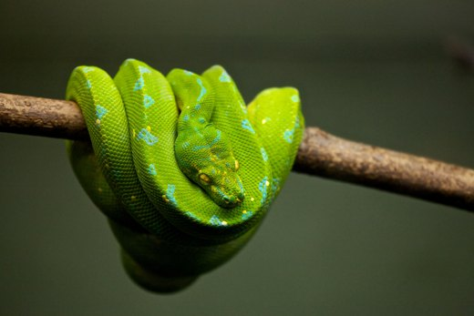
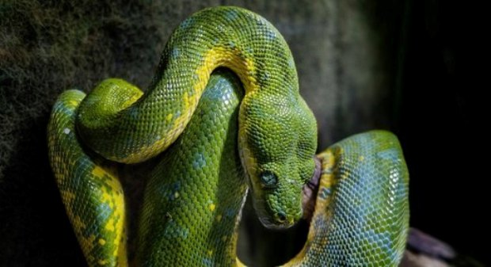
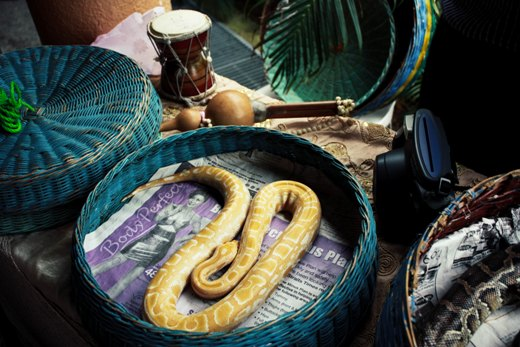
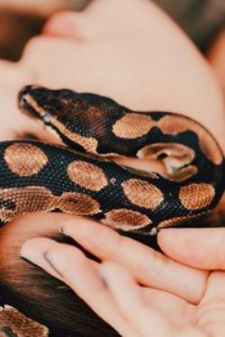
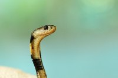
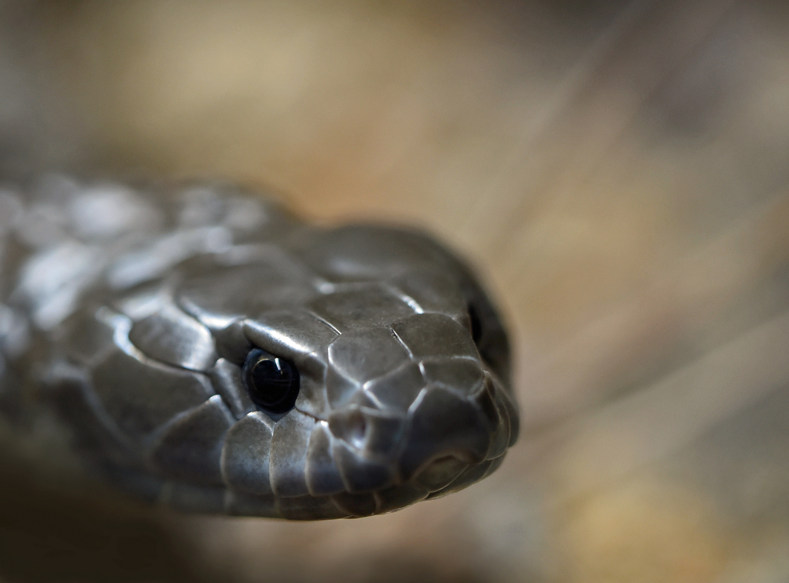
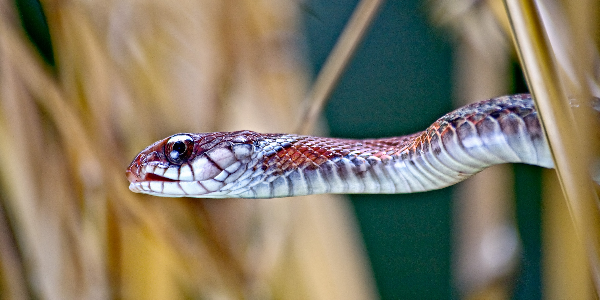
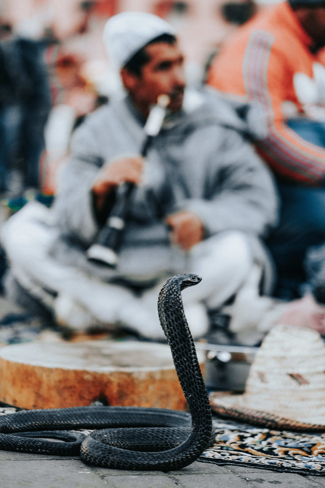

THE SNAKE WORLD
DEFFINITION OF SNAKE
A long limbless reptilewhich has no eyelids,
a short tail, and
jaws that are capable of considerable extension.
Some snakes have a venomous bite.


VIPER
GREEN MUMBA



YELLOW VIPER
GARTER SNAKE
COBRA


BABY COBRA
REDISH JACK VIPER
WORLD FAMOUS POISONOUS SNAKE---
BLACK MAMBA
Black mambas
are actually brown in color.
They get their name from the
blue-black
of the inside of their mouths, which they display when threatened.
PICTURE OF BLACK MAMBA

back